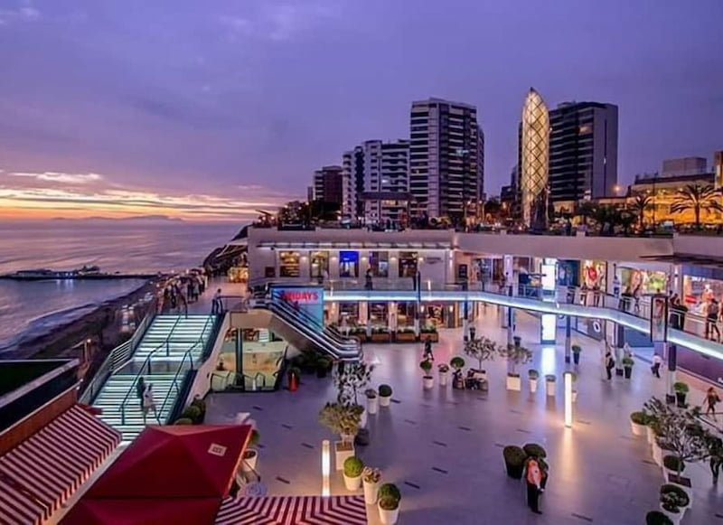
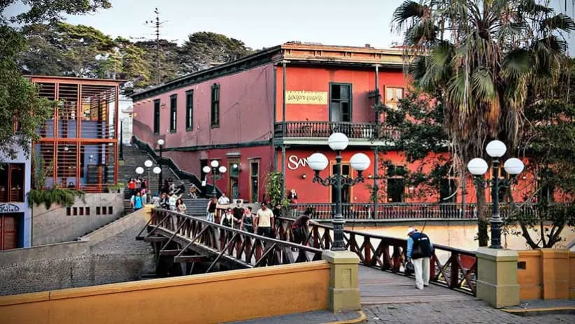
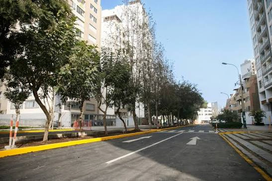
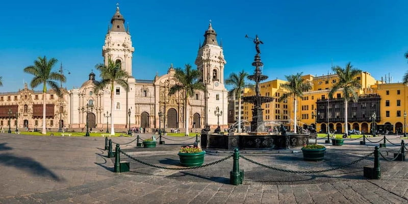

Restaurant & Market Guide
Explore Lima's best dining spots by neighborhood
Where to Eat in Lima
Lima's neighborhoods each have a distinct culinary personality. Miraflores is home
to fine dining and internationally renowned restaurants. Barranco brings a bohemian
spirit with creative chefs and cozy cafés. Surquillo's markets offer the freshest
ingredients and authentic local cooking at everyday prices.
Below you'll find curated recommendations for each area, from world-class
restaurants to the street stalls locals swear by.
📍 Lima, Peru
Planning to eat out? Check Lima's current weather above.

Miraflores
Upscale dining, ocean views, world-class chefs
-
La Mar
Best ceviche in Lima · Seafood
-
Central
#1 restaurant in Latin America · Peruvian haute cuisine
-
Maido
Japanese-Peruvian Nikkei cuisine · Seafood / Fusion
-
Grimanesa Vargas
Legendary anticuchos street stall · Street Food

Barranco
Bohemian vibe, creative kitchens, café culture
-
Isolina
Afro-Peruvian comfort food · Traditional
-
Café Bisetti
Best coffee in Lima + pastries · Café
-
Tía Grimanesa
Famous picarones dessert stall · Street Food
-
Canta Rana
Casual ceviche spot, loved by locals · Seafood

Surquillo
Authentic markets, local eateries, unbeatable prices
-
Mercado de Surquillo
Lima's best produce and seafood market · Market
-
La Picantería
Northern Peruvian cuisine, weekend lunch spot · Traditional
-
El Rincón que No Conoces
Hidden gem for classic criollo cooking · Traditional

Historic Center
Traditional picanterías, heritage markets, street food
-
Tanta
Gastón Acurio's bistro, great for lunch · Peruvian
-
Mercado Central
Street food, juices, chicharrón · Market
-
L'Eau Vive
Historic restaurant run by nuns since 1959 · French-Peruvian